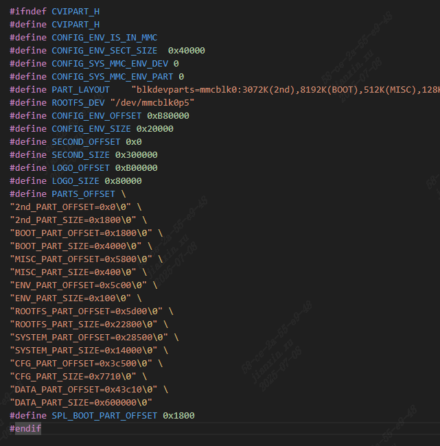
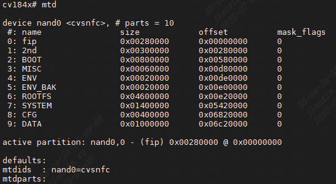

5.2. Burn firmware to Flash¶
5.2.1. Preparation Before Burning¶
ViewLoad ofFirmwareofSize
inUseTFTPLoad FirmwaretoDDR ，Canfrom in toFileofSize

View FirmwareinFlashinof Address
UseU-BOOTofprintenvCommandsCanView Information，or EnableSDK/u-boot-2021.10/include/cvipart.h， File Include Information

{kind=link}

5.2.2. BurnFirmware¶
fromon MemoryAddress Firmware Loadingtoemmc
File emmc Need toNote，FileSizeofUnitis“ ”， ActualSize/ Size512，PleaseAlignmentafter emmc Operation
1 # 1. ddr ，andLoadFiletoddr
2 # 2. fip.bintoemmc boot0Partition,
3 # fip.bin inbootPartition， FileinuserPartition；Select emmc and to boot Partition
4 mmc dev 0 1
5 # fip.bin flash， isDDRAddress，flashAddress，FileSize
6 mmc write 0x82000000 0x0 0x800
7 # fip.bin
8 mmc write 0x82000000 0x800 0x800
9 # 3. Filetoemmc boot0Partition
10 # Select emmc and to user Partition
11 mmc dev 0 0
12 # yoc.bin
13 mmc write 0x82100000 0x0 0xc00
14 # boot.emmc
15 mmc write 0x82280000 0x1800 0x1800
16 # rootfs.emmc
17 mmc write 0x82580000 0x5d00 0x4000
18 # cfg.emmc
19 mmc write 0x82d80000 0x3c500 0x5000
20 # system.emmc
21 mmc write 0x83780000 0x28500 0x2800
fromon MemoryAddress Firmware Loadingtospinand
1 # Usemtd Commands CanView beforespinand Partition
2 mtd
{kind=link}

1 # fip.bin
2 nand erase.part fip
3 # fip Usecvi_sd_update ofUsenand write
4 # cvi_sd_update Can fip.bin
5 cvi_sd_update 0x82000000 spinand fip
6
7 # yoc.bin
8 nand erase.part 2nd
9 # yoc.bin offsetandsize page size Alignment，UnitisBytes
10 nand write 0x82100000 2nd 0x180000
11 # boot.spinand
12 nand erase.part BOOT
13 # boot.spinand
14 nand write 0x82280000 BOOT 0x300000
15 # rootfs.pinand
16 nand erase.part ROOTFS
17 # rootfs.spinand
18 nand write 0x82580000 ROOTFS 0x800000
19 # cfg.spinand
20 nand erase.part CFG
21 # cfg.spinand
22 nand write 0x82d80000 CFG 0xA00000
23 # system.spinand
24 nand erase.part SYSTEM
25 # system.spinand
26 nand write 0x83780000 SYSTEM 0x300000
fromon MemoryAddress Firmware Loadingtospinor
1 # andInitialize SPI-NOR
2 sf probe
3 # flash，not Write，with16MB as an example，0x0 Address，16M = 0x1000000
4 sf erase 0x0 0x1000000
5 # printenvCommands toofInformationwillDDRofDataWriteFlash， page Alignment。UnitisBytes。
6 # fip.bin
7 sf write 0x82000000 0x0 0x100000
8 # yoc.bin
9 sf write 0x82100000 0x200000 0x100000
10 # boot.spinor
11 sf write 0x82280000 0x300000 0x300000
12 # rootfs.spinor
13 sf write 0x82580000 0x640000 0x480000